BeagleBone 官方镜像： BeagleBoard.org Latest Firmware Images
下载推荐的镜像:
bone-debian-7.9-lxde-4gb-armhf-2015-11-12-4gb.img.xz
.xz 文件解压：
xz -d bone-debian-7.9-lxde-4gb-armhf-2015-11-12-4gb.img.xz
得到 .img 文件。
挂载镜像
在 Linux 下挂载 .img 文件，
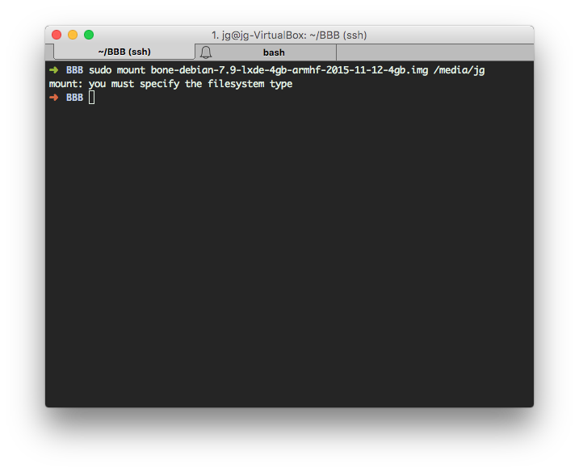
可见直接挂载的话会出现：mount: you must specify the filesystem type。
首先，要说明一下的是，这情况是由于 img 文件的开头包含了 MBR，以致于系统无法识别。img 文件相当于一个包含操作系统的硬盘，而我们只需要挂载它的文件系统部分，所以需要绕过 MBR。
绕过 MBR 挂载文件系统有两种方法。
第一种：
首先使用 fdisk 查看分区信息：
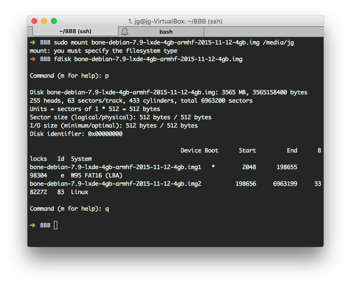
看到第一个分区从第 2048 个扇区开始， Units = sectors of 1 * 512 = 512 bytes，Unit ＝ 2048 ＊ 512 ＝ 1048576，所以我们偏移 1028576 个字节挂载第一个分区；
第二个分区从第 198656 个扇区开始，Unit = 198656 * 512 = 101711872，偏移 101711872 个字节挂载第二个分区；
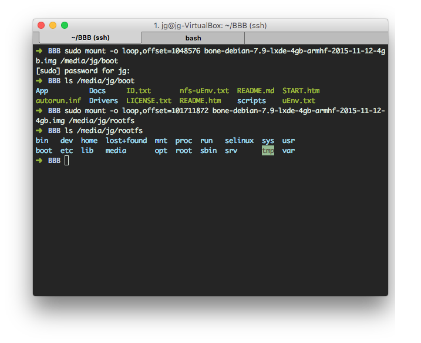
第二种:
安装 kpartx，先把镜像挂载到 loop 设备上，然后使用 kpartx 创建分区表映射，并挂载相应的映射。
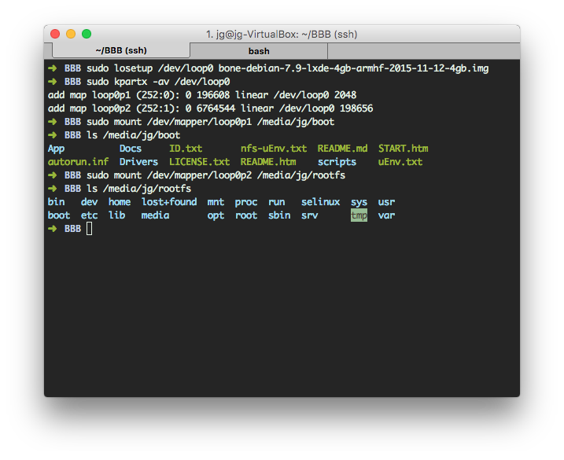
镜像分析
从 AM335x 的启动流程可知，如果需要启动 U-Boot，FAT 启动模式下必须得有一个在 FAT 格式的活跃主分区中名为 MLO 的文件供 ROM Code 运行。但是我们分析镜像里面第一个 FAT 分区并没有发现 MLO 文件。
早期的 BeagleBone Black 映像会把 MLO 和 u-boot.img 放在活跃主分区（active primary partition）的 FAT 文件系统的根目录里。SD 的映像会包含两个分区，一个 FAT32 分区和一个 Linux ext3/4 分区。全功能的第二阶段 U-Boot 会包含硬编码的环境变量，它可以靠这些环境变量提供的配置进一步加载 uEnv.txt，之所以使用硬编码的环境变量和 uEnv.txt 是因为采用这种配置方式的 U-Boot 不能用 saveenv 保存环境变量。
最近，BeagleBone Black 采用所谓
RAW模式的 U-Boot 配置方式。在 RAW 模式下，内置 ROM 代码会依次从 sector #0 (offset 0x00000)、sector #256 (0x20000)、sector #512 (0x40000)和sector #768 (0x60000) 这几个位置来搜索 TOC structure/Configuration Header（这个数据结构可以在TI的AM335x Technical Reference Manual中查到）。 如果你还想将MMC作为一个磁盘，那么 MMC 上就必须有一个 MBR。在这种配置下，你就不能把 U-Boot SPL/MLO放在sector #0 了（参见Wikipedia里的MBR结构）。由于前面提到 ROM 代码会顺序搜索可用的MLO，因此把 U-Boot SPL/MLO 放到0x20000 (sector #256)就可以解决这个问题。
随后，U-boot SPL 可以从 0x60000 进一步加载完整功能的 U-Boot。从块存储设备运行 U-Boot 的优点之一是可以保存环境变量，也就不再需要加载 uEnv.txt。
所以目前 Beaglebone Black 官方镜像把 MLO 和 U-Boot 数据写入在第一个分区之前的扇区内，因为我们的第一个分区的数据从 sector 2048 开始，每个 sector 为 512字节，所以足足有 1MB 的存储空间供我们使用。 当把 MLO 和 U-Boot 用 RAW Mode 写入的时候，处理器 SPL 阶段会自动判断是 RAW Mode 还是 FTA Mode 启动。
MBR
主引导记录（Master Boot Record，缩写：MBR），又叫做主引导扇区，是计算机开机后访问硬盘时所必须要读取的首个扇区。主引导扇区记录着硬盘本身的相关信息以及硬盘各个分区的大小及位置信息，是数据信息的重要入口。 标准 MBR 结构如下图：
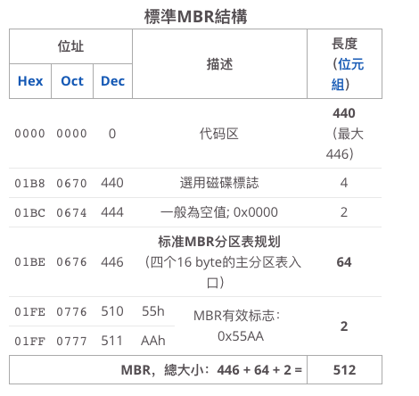
使用 dd 命令提取出镜像前 2048 扇区（2048*512 字节）的数据，查看前 512 字节是否存在 MBR：
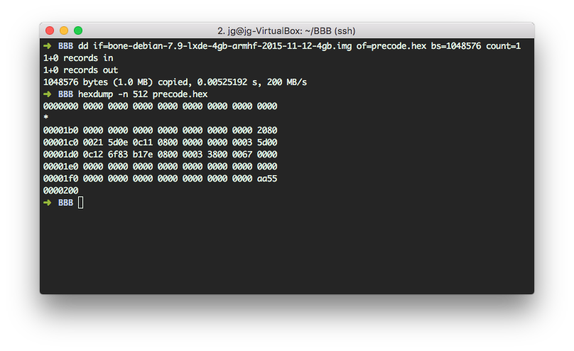
可以看到地址 0x01BE–0x01FD 的确存在分区表，且有 MBR 有效标志 0x55AA，但是我们提取出来为 0xAA55 ，这里肯定是大小端不一致造成的。
根据硬盘分区表结构信息分析出来的分区情况和 fdisk 工具查看的分区情况一致。
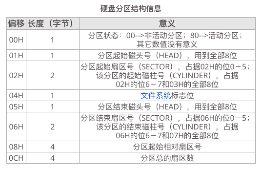
启动代码
前面镜像分析出，MBR 占用了第一个扇区，所以启动代码 MLO 和 U-Boot 肯定存储在地址 0x20000、0x40000或0x60000处。
RAW 模式下存储也有一定格式，如果是通用设备，则 TOC structure/Configuration Header 则必须存储在第一个扇区中，并且紧跟着是 GP Header。
The raw mode is detected by reading sectors #0, #256, #512, #768. The content of these sectors is then verified for presence of a TOC structure as described in Section 26.1.9. In the case of a GP Device, a Configuration Header (CH) must be located in the first sector followed by a GP header. The CH might be void (only containing a CHSETTINGS item for which the Valid field is zero).
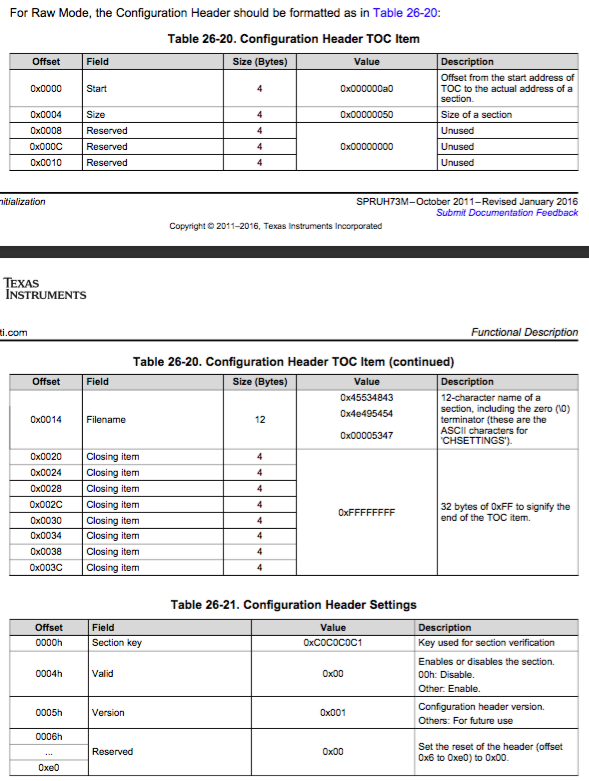
还是分析刚刚提取出来的数据， 从地址 0x20000 开始的第一个扇区：
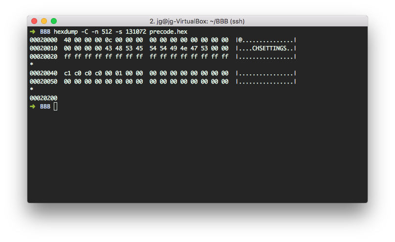
看数据的确包含了 RAW Mode 的配置头。
那么这个扇区之后紧跟着就是包含 GP Header 的镜像文件数据了，从地址 0x0000 开始为数据大小，地址 0x0004 开始为要拷贝至的目标地址，0x0008 地址开始接下来就是镜像数据，结构如下：
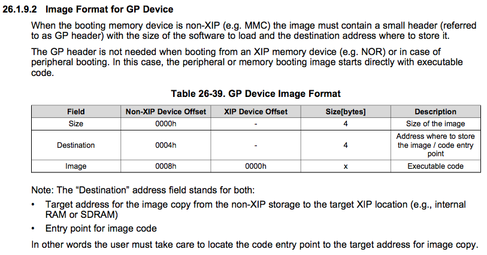
还是用 hexdump 分析：
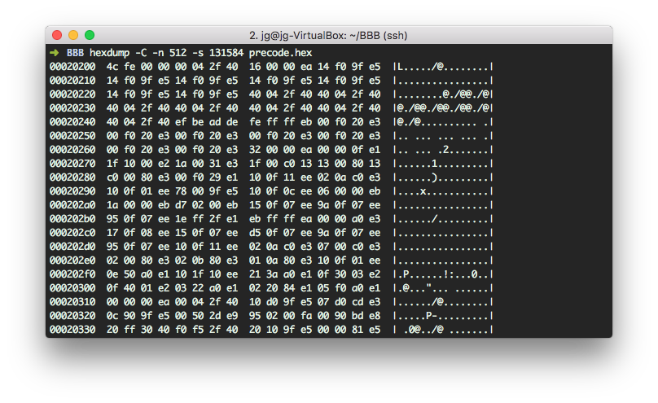
大小端转换下得到：镜像数据大小为 0x0000fe4c ＝ 65100 bytes，目标地址为 0x402f0400，此地址为 AM335x 的内部 SRAM 的地址，所以 RAM Code 会把 MLO 拷贝到内部 SRAM 运行。
MLO 启动之后会在地址 0x60000 也就是第 0x300 扇区开始加载 U-Boot。（MLO 会分别在 RAW 模式 FAT 等模式下查找可用的 u-boot.img）。我们使用 hexdump 工具也的确能从地址 0x60000 开始发现有效数据。
U-Boot 启动后会根据 U-Boot 配置的文件位置信息（DFU_ALT_INFO_MMC）查找可用的 uEnv.txt 文件，并运行相关的命令：
##These are needed to be compliant with Angstrom's 2013.06.20 u-boot.
loadaddr=0x82000000
fdtaddr=0x88000000
rdaddr=0x88080000
initrd_high=0xffffffff
fdt_high=0xffffffff
##These are needed to be compliant with Debian 2014-05-14 u-boot.
loadximage=echo debug: [/boot/vmlinuz-${uname_r}] ... ; load mmc 0:2 ${loadaddr} /boot/vmlinuz-${uname_r}
loadxfdt=echo debug: [/boot/dtbs/${uname_r}/${fdtfile}] ... ;load mmc 0:2 ${fdtaddr} /boot/dtbs/${uname_r}/${fdtfile}
loadxrd=echo debug: [/boot/initrd.img-${uname_r}] ... ; load mmc 0:2 ${rdaddr} /boot/initrd.img-${uname_r}; setenv rdsize ${filesize}
loaduEnvtxt=load mmc 0:2 ${loadaddr} /boot/uEnv.txt ; env import -t ${loadaddr} ${filesize};
check_dtb=if test -n ${dtb}; then setenv fdtfile ${dtb};fi;
loadall=run loaduEnvtxt; run check_dtb; run loadximage; run loadxrd; run loadxfdt;
mmcargs=setenv bootargs console=tty0 console=${console} ${optargs} ${cape_disable} ${cape_enable} root=/dev/mmcblk0p2 rootfstype=${mmcrootfstype} ${cmdline}
uenvcmd=run loadall; run mmcargs; echo debug: [${bootargs}] ... ; echo debug: [bootz ${loadaddr} ${rdaddr}:${rdsize} ${fdtaddr}] ... ; bootz ${loadaddr} ${rdaddr}:${rdsize} ${fdtaddr};
官方镜像里面的 uEnv.txt 主要包含从哪个位置加载内核镜像的命令，U-Boot 加载文件后后会运行 uenvcmd 命令，这样就能启动 Linux 内核了。
如何烧写
将Bootloader映像用 RAW 模式保存到eMMC/SD卡中，使用如下命令将文件写入到SD卡或者eMMC的起始位置：
# 这里的conv=ontrunc加不加都行，因为对于块设备来说，notrunc没有作用
# 每个block为512字节，跳过256个block，写入256个block
dd if=MLO of=/dev/sdb bs=512 seek=256 count=256 conv=notrunc
dd if=u-boot.img of=/dev/sdb bs=512 seek=768 count=1024 conv=notrunc
如果你写入的是一个可插拔SD卡，那么用下面的命令来确保内容都确实写入到了卡中：
sudo blockdev --flushbufs /dev/sdb